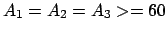

Next: 5 Configuration 3: Three-modules Up: 4 Configuration 2: Pitch-Yaw-Pitch Previous: 3 Lateral Shift
PYP also can perform a lateral rolling gait (Figure ![[*]](crossref.png) b).
The restrictions are the same as in lateral shift but the amplitude
of the waves are greater or equal than 60:
b).
The restrictions are the same as in lateral shift but the amplitude
of the waves are greater or equal than 60:
When PYP rolls it is converted into a YPY (yaw-pitch-yaw) configuration. Now, it only has one module on the pitch axis. Therefore, it cannot move forward or backward. But lateral shift or lateral rolling can still be achieved. When lateral rolling is performed, configurations PYP and YPY appears alternatively.